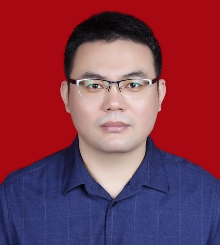
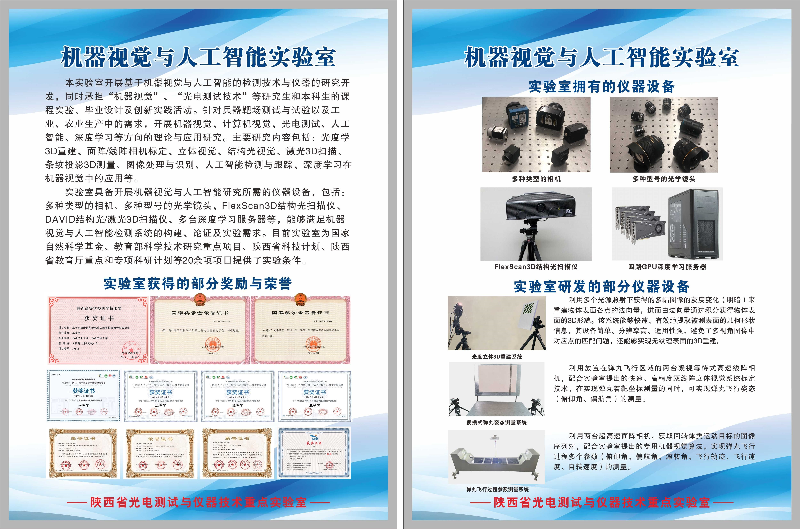

|  |
• 博士，教授，博士生导师。男，汉族，1980年9月出生于山东省淄博市桓台县。 |
|
• 2005年4月-7月在华为技术有限公司（深圳）工作。 |
|
• 主讲研究生《机器视觉》和本科生《光电测试技术》等专业课程。 |
|
• 光度学3D重建：SFS、光度立体 |
|
• 主持或主持完成国家自然科学基金项目1项、教育部科学技术研究重点项目1项、陕西省科技计划项目3项（自然科学基础研究计划青年项目1项、面上项目2项）、陕西省教育厅重点科学研究计划项目1项、
陕西省教育厅专项科研计划项目1项、陕西省重点实验室开放基金项目1项、西安市重点实验室开放基金项目1项、西安工业大学校长基金1项、科研院所合作研发项目7项；
作为主要成员参与国家自然科学基金项目2项、陕西省教育厅与西安市科技局项目5项、企业横向合作研发项目20余项。 |
|  |